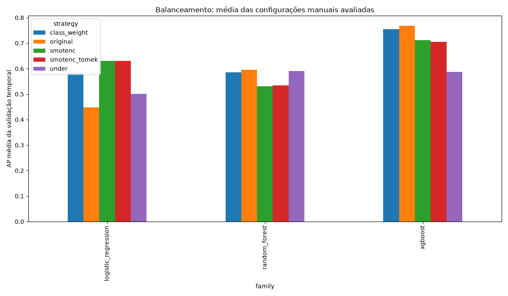
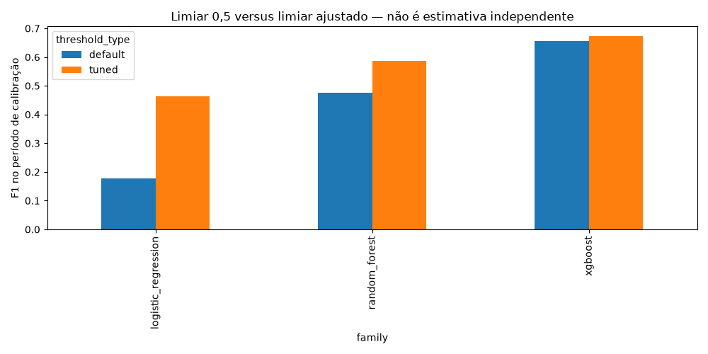
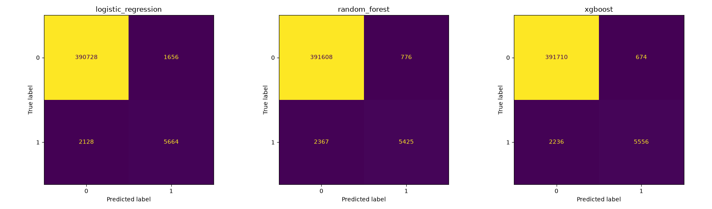
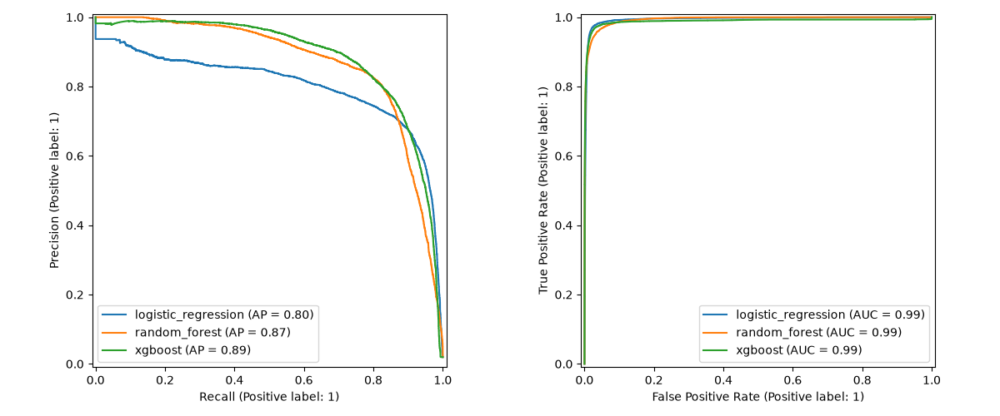

Campeão escolhido exclusivamente pela AP da validação temporal: xgboost. Limiar escolhido por F1 no período de calibração. O teste é descritivo. Escores não são probabilidades calibradas. Os cenários têm alvos diferentes; valores sinalizados não demonstram dinheiro efetivamente protegido.
| partition | rows | positives | prevalence | start | end |
|---|---|---|---|---|---|
| development | 1396047 | 6883 | 0.004930 | 2024-01-01T03:00:00+00:00 | 2024-01-14T15:00:00+00:00 |
| calibration | 203777 | 701 | 0.003440 | 2024-01-14T16:00:00+00:00 | 2024-01-16T02:00:00+00:00 |
| test | 400176 | 7792 | 0.019471 | 2024-01-16T03:00:00+00:00 | 2024-02-01T02:59:59+00:00 |
| scenario | run_id | family | candidate | threshold | accuracy | precision | recall | f1 | average_precision | roc_auc | tn | fp | fn | tp |
|---|---|---|---|---|---|---|---|---|---|---|---|---|---|---|
| 2m | 20261123T225557_ac994bc3 | logistic_regression | logistic_regression__smotenc_tomek__default | 0.951277 | 0.990544 | 0.773770 | 0.726899 | 0.749603 | 0.802411 | 0.993574 | 390728 | 1656 | 2128 | 5664 |
| 2m | 20261123T225557_ac994bc3 | random_forest | random_forest__original__adjusted | 0.286255 | 0.992146 | 0.874859 | 0.696227 | 0.775388 | 0.868541 | 0.993420 | 391608 | 776 | 2367 | 5425 |
| 2m | 20261123T225557_ac994bc3 | xgboost | xgboost__original__adjusted | 0.380241 | 0.992728 | 0.891814 | 0.713039 | 0.792469 | 0.885139 | 0.988193 | 391710 | 674 | 2236 | 5556 |



